キノコ栽培
1日目
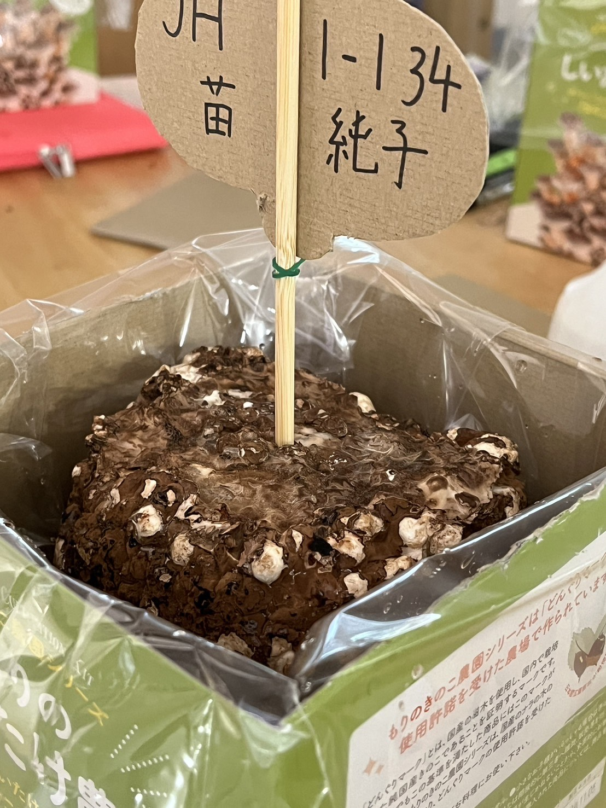
水で全体を洗った
シイタケが生えてくるのが楽しみだ
2日目
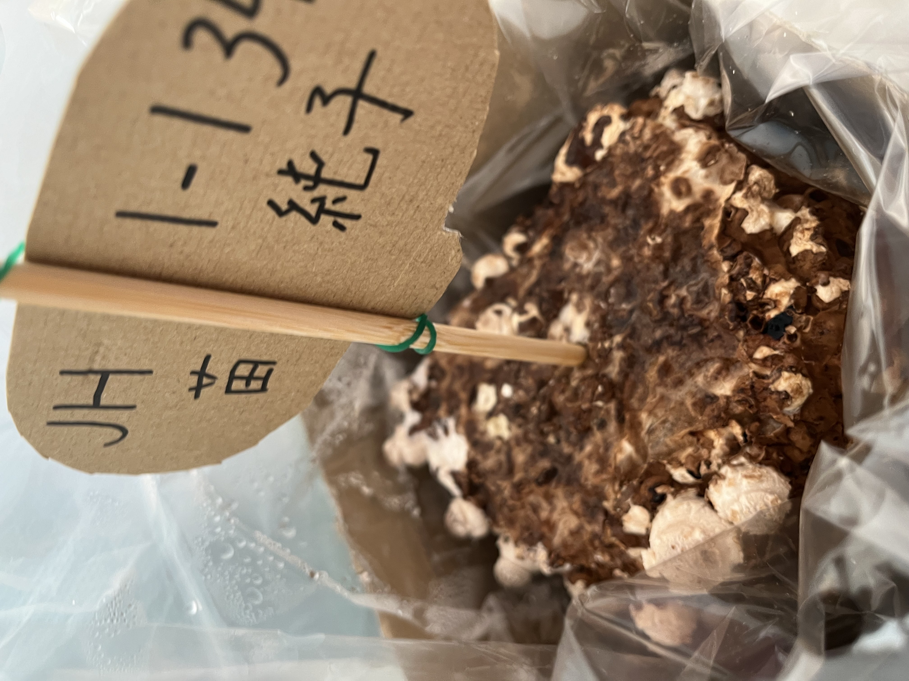
軽くシイタケ全体に水をかけた
白いところが増えてきた
3日目
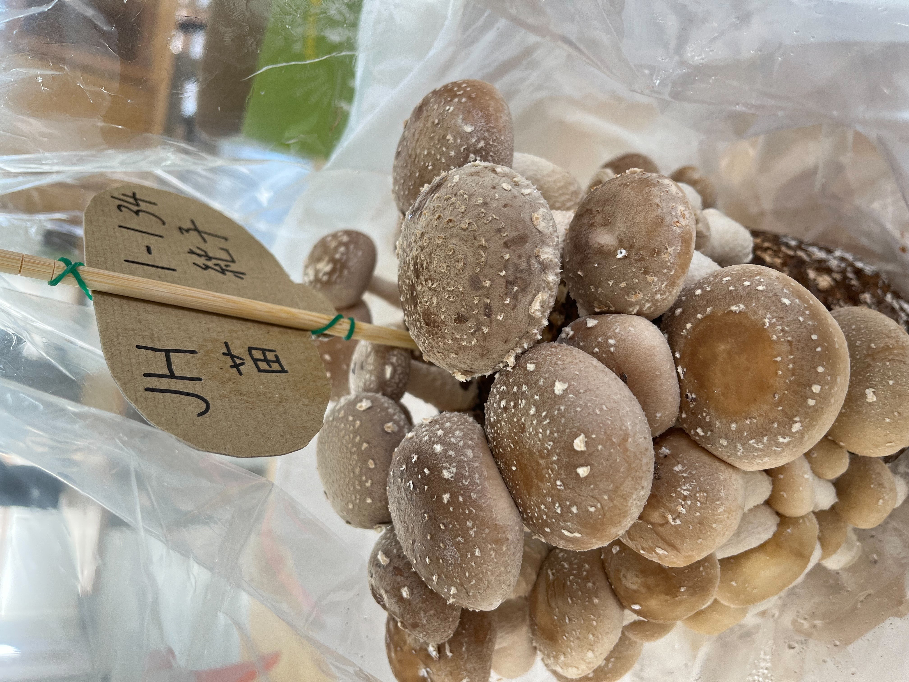
シイタケがたくさん生えた
サイズはバラバラだった
4日目
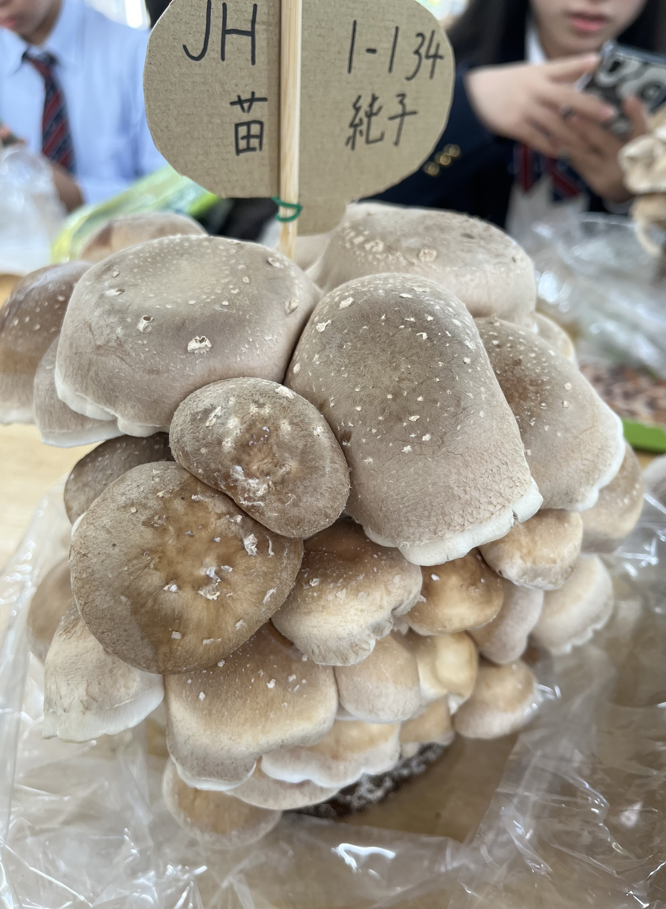
土が見えないほどシイタケで埋まった
傘が開きすぎた
収穫後
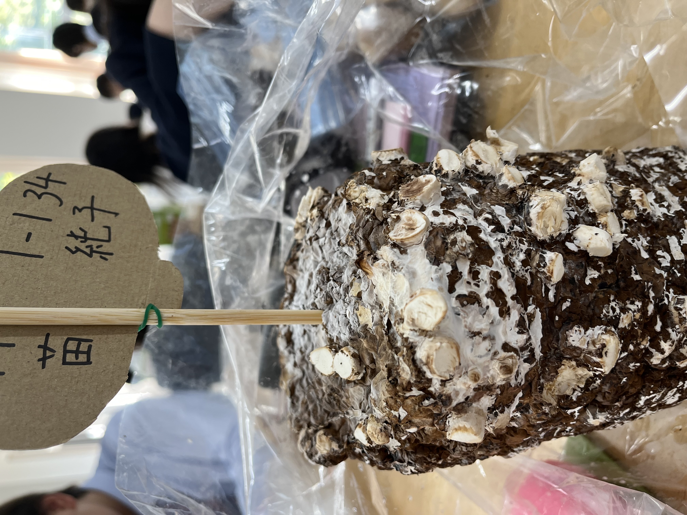
根っこを少し残してシイタケを切った
収穫したやつ
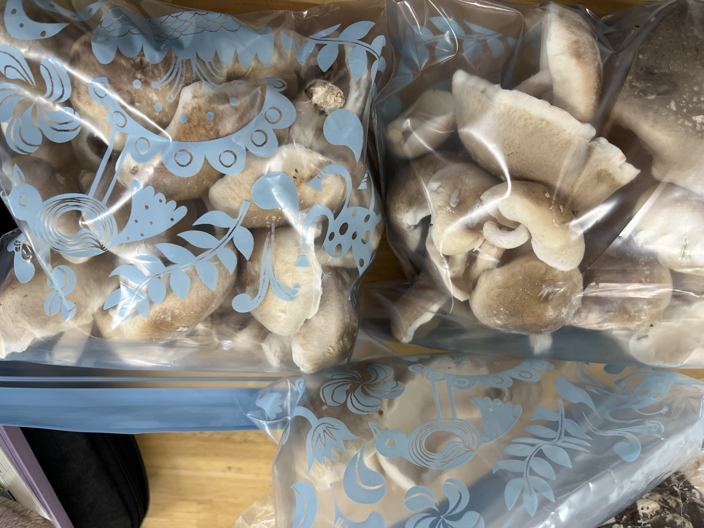
調理してゆく！
↓
↓
↓
↓
↓
↓
↓
↓
↓
調理
~~しいたけとお肉の炒め~~
具材(4人分)
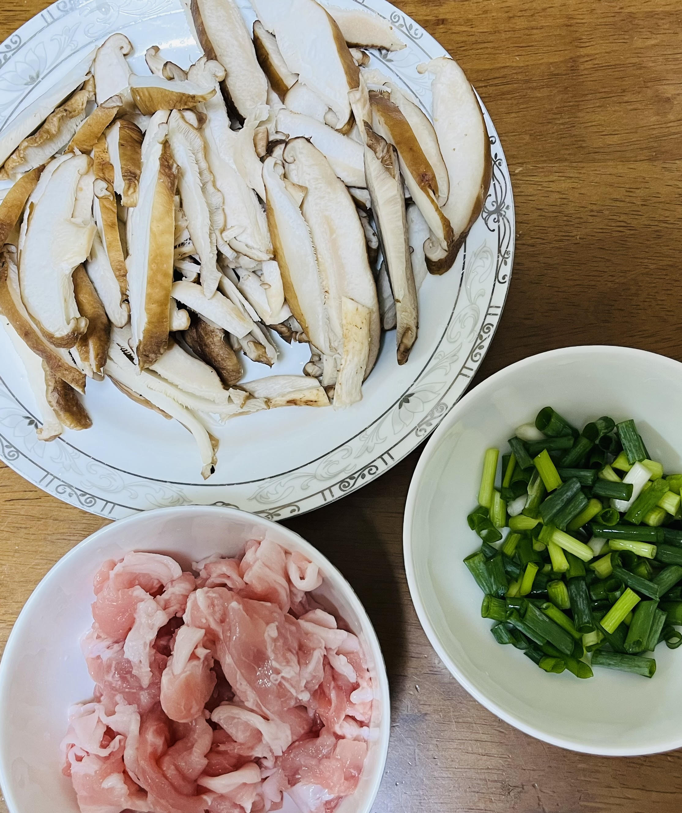
材料名 | 個数 |
|---|
しいたけ | 5個 |
豚肉 | 1パック（160gくらい） |
ねぎ | 少々 |
塩 | 小さじ1杯 |
鶏だし | 小さじ1杯 |
しょうゆ | 小さじ1杯 |
作り方
①しいたけとお肉とねぎを小さく切る
②油をしいてお肉を中火でいためる
③お肉の赤みがなくなったら①で切った、しいたけも加える
④その上に①で切った、ねぎも少々加える
⑤塩も小さじ1杯加える
⑥鶏だしも小さじ1杯加える
⑦また水も少し加える
⑧そして強火にし、軽くいためる
⑨皿に移して完成！
②ーーーーーーーーーーーーー➤③ーーーーーーーーーーーーー➤④
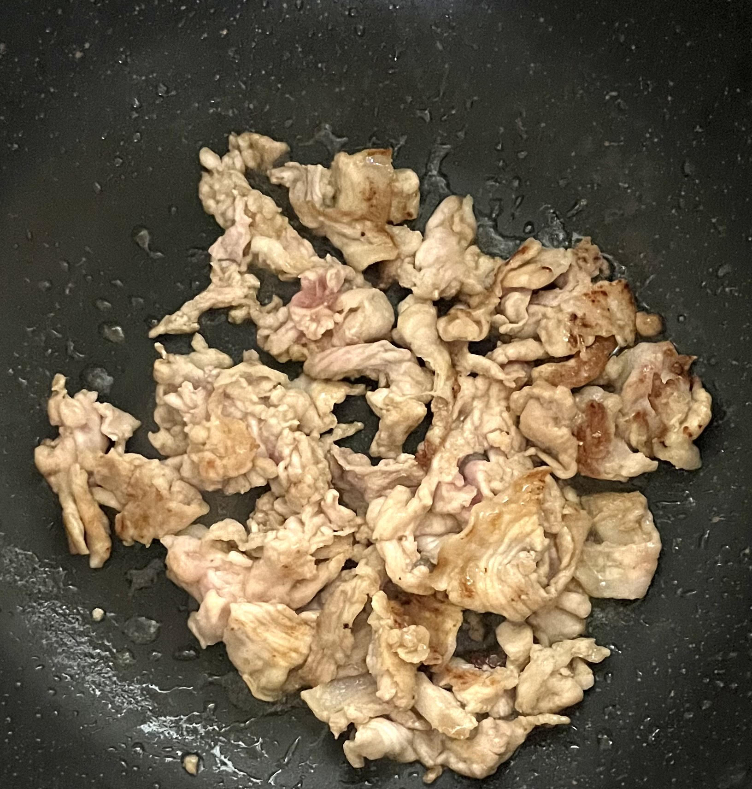
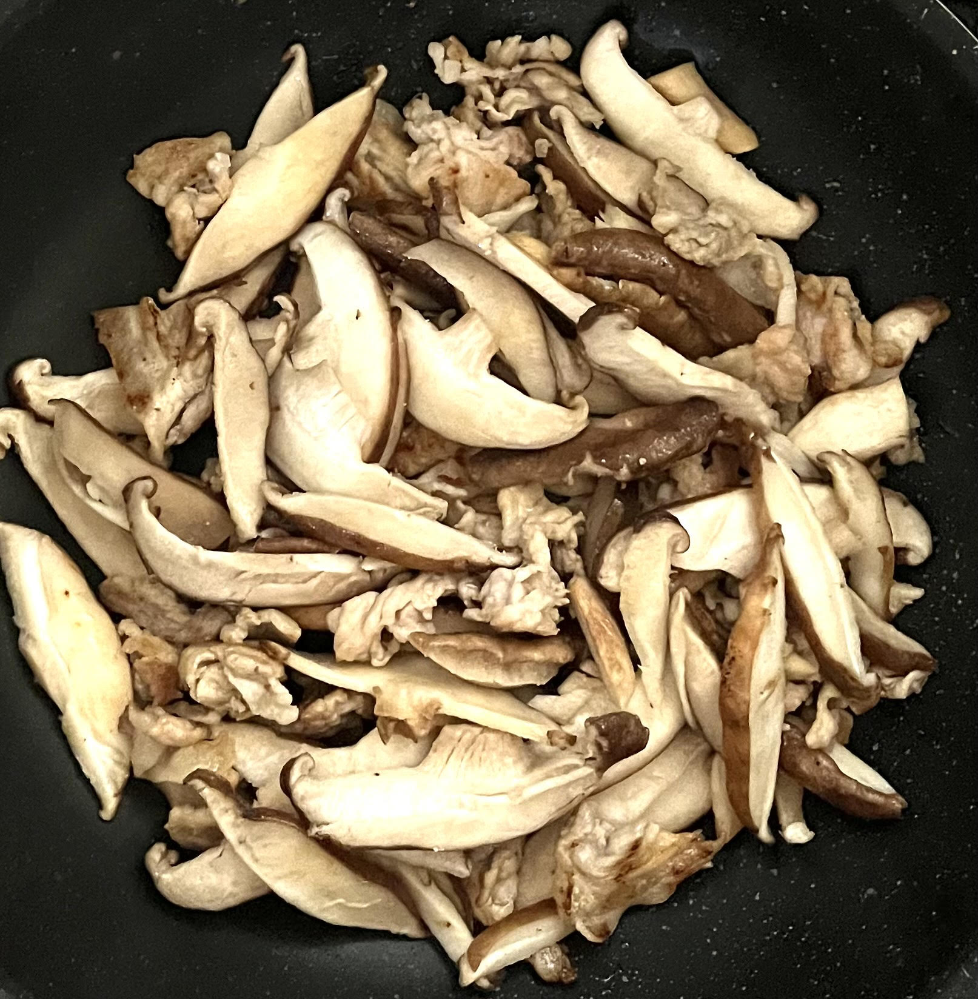
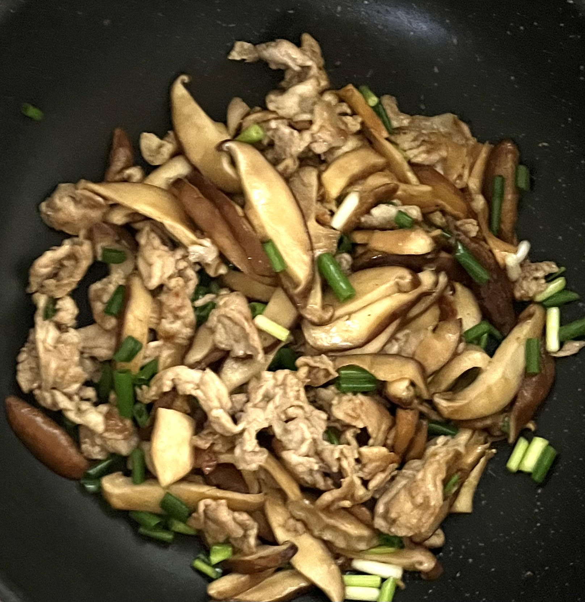
完成！
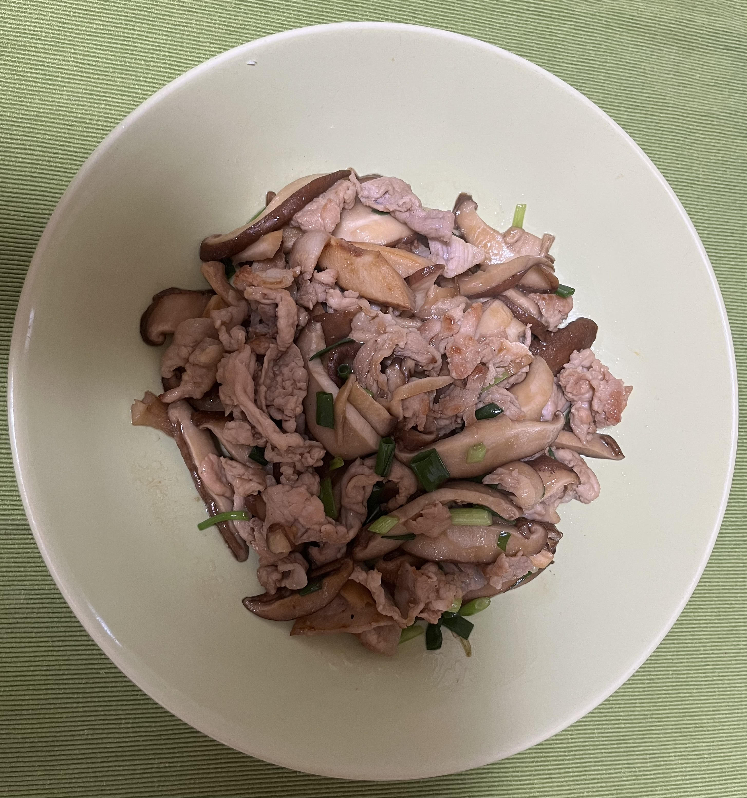